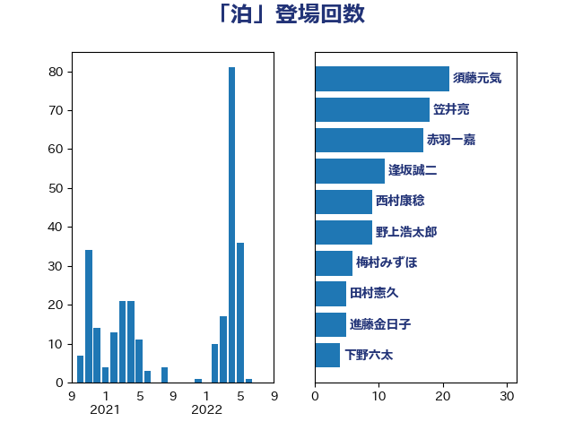

単語「泊」

| 須藤元気 | 無所属 | 21 回 |
| 笠井亮 | 日本共産党 | 18 回 |
| 赤羽一嘉 | 公明党 | 17 回 |
| 逢坂誠二 | 立憲民主党 | 11 回 |
| 西村康稔 | 自由民主党 | 9 回 |
| 野上浩太郎 | 自由民主党 | 9 回 |
| 梅村みずほ | 日本維新の会 | 6 回 |
| 田村憲久 | 自由民主党 | 5 回 |
| 進藤金日子 | 自由民主党 | 5 回 |
| 下野六太 | 公明党 | 4 回 |
| 堂故茂 | 自由民主党 | 4 回 |
| 熊野正士 | 公明党 | 4 回 |
| 高橋千鶴子 | 日本共産党 | 4 回 |
| 井林辰憲 | 自由民主党 | 3 回 |
| 伴野豊 | 立憲民主党 | 3 回 |
| 山本剛正 | 日本維新の会 | 3 回 |
| 武井俊輔 | 自由民主党 | 3 回 |
| 石井苗子 | 日本維新の会 | 3 回 |
| 石田昌宏 | 自由民主党 | 3 回 |
| 長友慎治 | 国民民主党 | 3 回 |
| 高橋はるみ | 自由民主党 | 3 回 |
| 大島敦 | 立憲民主党 | 2 回 |
| 室井邦彦 | 日本維新の会 | 2 回 |
| 寺田学 | 立憲民主党 | 2 回 |
| 岡本三成 | 公明党 | 2 回 |
| 平口洋 | 自由民主党 | 2 回 |
| 斉藤鉄夫 | 公明党 | 2 回 |
| 清水貴之 | 日本維新の会 | 2 回 |
| 滝波宏文 | 自由民主党 | 2 回 |
| 紙智子 | 日本共産党 | 2 回 |
| 緑川貴士 | 立憲民主党 | 2 回 |
| 遠藤良太 | 日本維新の会 | 2 回 |
| 野田佳彦 | 立憲民主党 | 2 回 |
| 阿達雅志 | 自由民主党 | 2 回 |
| 中川宏昌 | 公明党 | 1 回 |
| 伊藤俊輔 | 立憲民主党 | 1 回 |
| 伊藤孝恵 | 国民民主党 | 1 回 |
| 古賀之士 | 立憲民主党 | 1 回 |
| 奥下剛光 | 日本維新の会 | 1 回 |
| 宮下一郎 | 自由民主党 | 1 回 |
| 宮崎雅夫 | 自由民主党 | 1 回 |
| 宮本周司 | 自由民主党 | 1 回 |
| 寺田静 | 無所属 | 1 回 |
| 小野田紀美 | 自由民主党 | 1 回 |
| 山崎誠 | 立憲民主党 | 1 回 |
| 岩渕友 | 日本共産党 | 1 回 |
| 岸真紀子 | 立憲民主党 | 1 回 |
| 徳永エリ | 立憲民主党 | 1 回 |
| 杉久武 | 公明党 | 1 回 |
| 杉尾秀哉 | 立憲民主党 | 1 回 |
| 根本幸典 | 自由民主党 | 1 回 |
| 浜口誠 | 国民民主党 | 1 回 |
| 猪口邦子 | 自由民主党 | 1 回 |
| 田名部匡代 | 立憲民主党 | 1 回 |
| 矢倉克夫 | 公明党 | 1 回 |
| 石井浩郎 | 自由民主党 | 1 回 |
| 石川大我 | 立憲民主党 | 1 回 |
| 空本誠喜 | 日本維新の会 | 1 回 |
| 竹内真二 | 公明党 | 1 回 |
| 細田健一 | 自由民主党 | 1 回 |
| 萩生田光一 | 自由民主党 | 1 回 |
| 葉梨康弘 | 自由民主党 | 1 回 |
| 足立敏之 | 自由民主党 | 1 回 |
| 近藤和也 | 立憲民主党 | 1 回 |
| 青木愛 | 立憲民主党 | 1 回 |
| 音喜多駿 | 日本維新の会 | 1 回 |